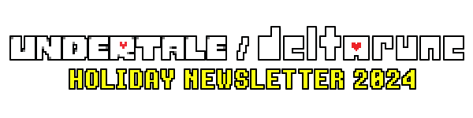
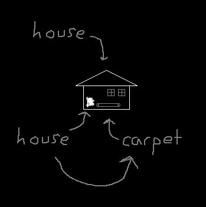
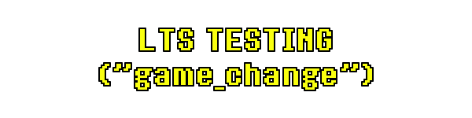
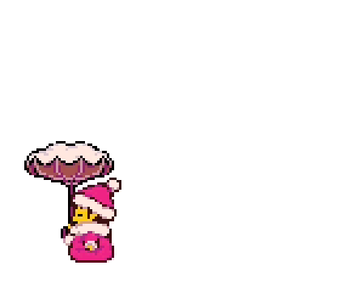
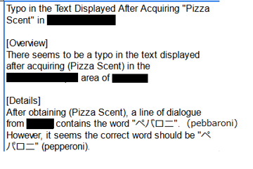
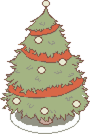
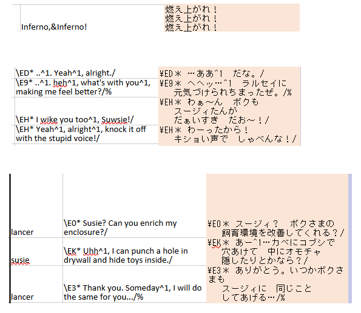
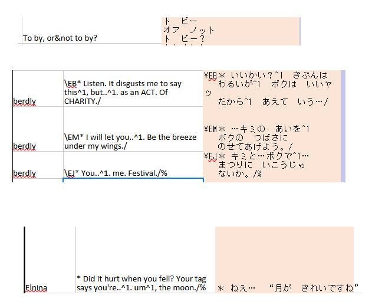
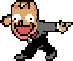
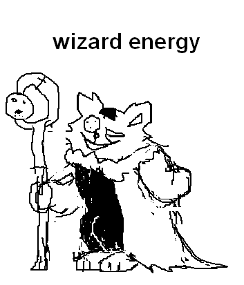

 |
|
It's cold. |
Snow has blanketed the ground. |
In this state, it's hard to know where to find anything… |
Let's start by looking up. |

Up above was the blue sky... |
Suddenly, a shadow appeared above you. |
... |
|
H-Hey! Are you following me or something!? |
Hey, if you're gonna follow me around, follow me at the place where it looks like a butterfly. |
(It flew away...) |
I think it's pronounced "Bluski". |
There, I tested the waters, ground, and sky. I made several posts about chicken, which actually resembles an image of a dog climbing. I even made a song about carpet. |
 |
In case Bluski flies away, I uploaded all the posts here as a memorial. That way you don't even have to remember the website. |
|


 |
After four months of waiting for a stable version, we were able to update GameMaker, and do public testing of its new chapter-switching command, "game_change()". |
It had some hiccups that needs to be ironed out, but overall it seemed to work okay! |
However, as a side effect of updating GameMaker, many other changes to the underlying engine caused unforeseen issues to pop up all across the game, creating new crashes, and even awakening some old bugs that were already fixed a long time ago. We've tried to fix everything we can, but it's hard to know if we got everything... |
One day in the future, after 3&4 are out, we will need to update GameMaker again in an even more extensive way... causing new and unknown bugs, crashes, and strange differences to appear once again in a game that is twice as big as it is now. |
I hope this illuminates one interesting aspect of game creation for you guys! |
Thank you very much to everyone that tested! |
|

Buried into the snow, was kind of ancient crystal... |
|
It sure is ancient. It might even be two months old! |
The crystal resonated with a message. |
Deltarune reached a 6th Anniversary.
|
... impatiently, you dug it out...! |
|
Seems that the dog will thaw with the passage of time... |
Umm, don't use the defrost setting. It will make the fur curl up and get sticky. |
 |


|
The game was tested by a professional team on PC. |
It's a bit strange... some of the only people to play the game so far... are just some talented and reliable guys in a room somewhere... I wonder if they liked it.... |
... |
I'm going to ask if they liked it. |
... |
... I got a response! To summarize... |
it was a lot of work trying to test all the subtle details and text differences in the game...
|
That seems like a fair assessment. there is a long section where you cannot save, but, it's also rumored to be fun... (noyo-yo, noyo-yo) (dog twiddling realistic human thumbs) |
That's what the reviews say so far. (noyo-yo, noyo-yo) (dog twiddling realistic human thumbs) |
By the way, a number of reports from the testing team were about things that seemed like bugs, but were actually intentional… |
 |
Chapter 3 is pretty solid now! Only console-related aspects remain. |

 |
The first Japanese translation pass of Chapter 4 was placed into the game! |
Here is some text, although keep in mind the translation is a work in progress. (It will take some months before the translation is completed with a final pass.) |
 |
 |
After the translation is nearing completion, we will begin PC testing. After that, we will do console testing for both Chapter 3 and 4. |
|

|
There is a clearing where some ice had melted... |
Some team members had to focus on Chapter 1, 2, and 3 bugfixes for a while, but our more recent hires have able to work on Chapter 5 during that time, so progress has still been steady! |
The rate of creation is quite solid this time! Many things are in development at once! |
 |

On a Friday in November, the sky turned black. Soon after, items were revealed in a cartoonish shape. |
|
There are many things you can look at, but I'll talk about two specific revelations. |
It’s like a long mask you can wear stretched over your skin. It will make you look more like someone with an important connection to you. |
You. |
Their love will become yours. |
Your love will become theirs. |
Fangamer wanted to make another plush. I was told that many people wanted a plush of Seam. |
|
I don't think Seam would believe that... In any case, I had to make a design. |
 |
I gave them a staff with which they can cast magic. Dusty magic, that twinkles like broken dreams. |
Although it could sort of be considered official, there's no tail. Should they have a large fluffy tail? Or, maybe it was torn off, by cruel and loving hands. ... anyway, by now, the tail in your mind should be stronger than anything I show you. Don't be discouraged. |
|


Me and Camellia collaborated on a new song for Sega's rhythm game, Chunithm! |
|
This song is called Theatore Creatore. Each song in the game has a unique character that goes along with it. In this case, it's about a theatermaster who is actually a God of Chaos. (This was their idea.) |
As usual for our collaborations, I created some of the melodies and then Camellia did all of the hard work. |
As a reference for what type of song to make, Sega sent me an example! The example was... |
The World Revolving... |
... guys... |
Anyway, I hope you guys enjoy the song! |
|
![Listen to Toby Fox & Camellia - Theatore Creatore [From CHUNITHM]](../../list_48/campaign_10/song-thumb-u5aplAAT0Wq7sEiE.png)

On Halloween 2024, we announced... |
Chapter 3&4 will release in 2025. |
This is 100000000000% true. |
We are also working on some other exciting things that we can't talk about now. |
It will take a good while to get going, but 2025 looks like it will be an interesting year...! |
|